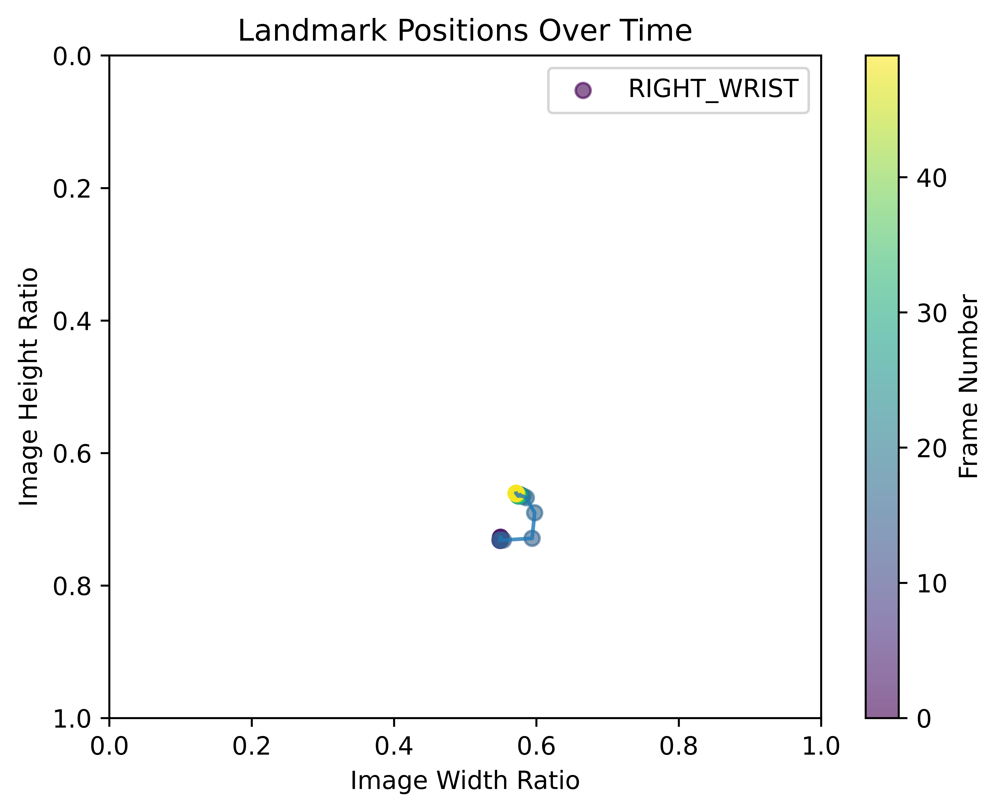

Summary:
Emocion Principal: Negativo
Psychomotor Score: 78.98268398268398%
Cognitive Score: 100.0%
Download JSON FileDownload CSV FileFull ReportMódulo Psicomotor
Psychomotor Score: 78.98268398268398%
Iteración: 0
Nombre del Movimiento: Bloqueo Hacia Arriba
Errores:
- Prioridad: 1 - Bloqueo Hacia Arriba: Posición inicial - El/la muñeca no está a la posición debajo de de el/la plexo solar.
- Prioridad: 1 - Bloqueo Hacia Arriba: Transición 4 - El/la codo está demasiado alejado de el/la oreja.
- Prioridad: 1 - Bloqueo Hacia Arriba: Transición 4 - El/la muñeca no está cruzando el/la nariz.
- Prioridad: 1 - Bloqueo Hacia Arriba: Posición final - El/la codo está demasiado alejado de el/la oreja.
- Prioridad: 2 - Bloqueo Hacia Arriba: Posición final - El/la muñeca no está cruzando el/la nariz.
 Download JSON FileDownload CSV File
Download JSON FileDownload CSV FileIteración: 1
Nombre del Movimiento: Bloqueo Hacia Arriba
Errores:
- Prioridad: 1 - Bloqueo Hacia Arriba: Posición inicial - El/la muñeca está demasiado alejado de el/la cuerpo.
- Prioridad: 1 - Bloqueo Hacia Arriba: Posición inicial - El/la muñeca no está a la posición debajo de de el/la plexo solar.
 Download JSON FileDownload CSV File
Download JSON FileDownload CSV FileIteración: 2
Nombre del Movimiento: Bloqueo Hacia Adentro
Errores:
- Prioridad: 1 - Bloqueo Hacia Adentro: Posición inicial - El/la codo está demasiado alejado de el/la oreja.
 Download JSON FileDownload CSV File
Download JSON FileDownload CSV FileIteración: 3
Nombre del Movimiento: Bloqueo Hacia Afuera Extendido
Sin errores
 Download JSON FileDownload CSV File
Download JSON FileDownload CSV FileIteración: 4
Nombre del Movimiento: Bloqueo Hacia Abajo Hacia Fuera
Errores:
- Prioridad: 1 - Bloqueo Hacia Abajo Hacia Fuera: Posición inicial - El/la muñeca no está a la posición a la izquierda de el/la codo.
- Prioridad: 1 - Bloqueo Hacia Abajo Hacia Fuera: Transición 1 - El/la codo no está anclado al cuerpo.
 Download JSON FileDownload CSV File
Download JSON FileDownload CSV FileIteración: 5
Nombre del Movimiento: Amartillamiento
Errores:
- Prioridad: 1 - Amartillamiento: Posición inicial - El/la muñeca está demasiado alejado de el/la cadera.
- Prioridad: 1 - Amartillamiento: Posición final - El/la muñeca está demasiado alejado de el/la cuerpo.
Download JSON FileDownload CSV FileMódulo Cognitivo
Cognitive Score: 100.0%
Question 1: ¿Qué enfatizamos en la ejecución de todos los bloqueos en el set de bloqueos 1?
- Answer: Técnica y Precision ✓
Question 2: ¿Qué es un bloqueo?
- Answer: Un movimiento defensivo ✓
Question 3: ¿En que posición se realiza normalmente el set de bloqueos?
- Answer: Posición Jinete ✓
Question 4: ¿En que parte del cuerpo deben estar tus brazos al comienzo del set de bloqueos?
- Answer: En las Caderas ✓
Question 5: ¿Qué posición tienen las manos al inicio del set?
- Answer: En un puño mirando hacia arriba ✓
Módulo Afectivo
Emocion Principal: Negativo
0-Bloqueo Hacia Arriba
- Negativo: 85.71%
- Neutral: 14.29%
Download JSON File1-Bloqueo Hacia Arriba
- Negativo: 28.57%
- Positivo: 14.29%
- Neutral: 57.14%
Download JSON File2-Bloqueo Hacia Adentro
- Neutral: 42.86%
- Negativo: 57.14%
Download JSON File3-Bloqueo Hacia Afuera Extendido
- Neutral: 28.57%
- Negativo: 71.43%
Download JSON File4-Bloqueo Hacia Abajo Hacia Fuera
Download JSON File5-Amartillamiento
Download JSON File